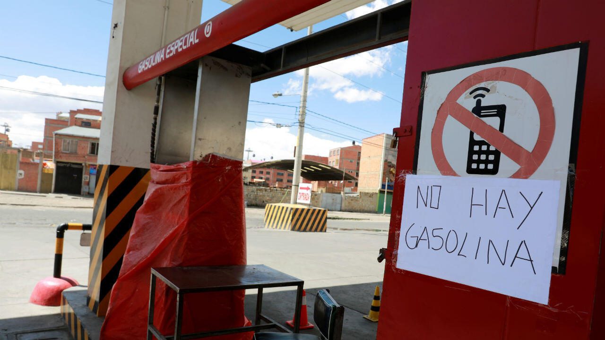

El peregrinaje por un tanque lleno en la Sede de Gobierno
Análisis de la situación actual (2025-2026)
Para el ciudadano paceño común, usar el transporte público (PumaKatari, minibuses, trufis) o conducir su propio vehículo se ha convertido en un desafío diario. En los últimos meses, Bolivia ha enfrentado una reducción en los volúmenes de importación de diésel y gasolina, lo que golpea fuertemente a La Paz debido a su topografía, que exige un alto consumo de combustible por vehículo.
¿Qué significa esto para ti? Cuando un surtidor en zonas como Miraflores o la Periférica recibe su cupo diario asignado por la ANH (por ejemplo, 10,000 litros), la demanda reprimida es tan alta que los conductores del transporte pesado, minibuses e incluso vehículos particulares agotan esa reserva en cuestión de horas. Las familias ven afectados sus horarios de trabajo y estudio porque muchas líneas de transporte reducen o suspenden sus rutas al no tener gasolina.
"Antes trabajaba mis dos turnos normales; ahora paso casi toda la noche durmiendo dentro del minibús haciendo fila cerca de la Terminal de Buses solo para cargar mi cupo de gasolina y poder salir a trabajar medio día." - Testimonio de un chofer del Sindicato Litoral en La Paz

Impacto en cadena
Si no hay diésel, los camiones distribuidores no logran bajar los alimentos desde El Alto a los mercados de La Paz. Es un efecto dominó que encarece directamente la canasta familiar urbana.